BekaStok
An offline-first stock, sales, credit, and cash-tracking mobile app for small and informal businesses. The project is currently being pilot-tested with a local shop to evaluate usability, daily workflows, and practical business fit.

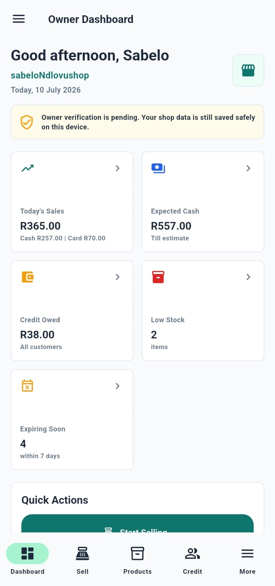
Project overview
Built arounddaily shopoperations.
BekaStok helps a small business owner record and understand the daily movement of stock, sales, customer credit, and cash. The app is designed for practical use in environments where internet access may not always be reliable.
Real-world scenario
WhyBekaStokexists.
Imagine a small shop owner serving customers while also trying to manage stock, cash, sales, and customer credit. A customer asks for a product they usually buy, but the owner only realises at that moment that it is out of stock. It was sold earlier, but no one recorded the last sale or marked it for restock.
One missed product may seem small, but repeated stockouts can damage customer trust. At the same time, credit may be written in a notebook, cash may be counted manually, and sales may be remembered later instead of recorded clearly.
BekaStok was created for this problem: helping small and informal businesses track stock, sales, credit, and cash before small mistakes become daily losses.
MANUAL RECORDS HIDE WHAT IS REALLY HAPPENING.
When stock, sales, credit, and cash are tracked manually, it becomes easier to miss low stock, forget customer credit, lose sight of daily cash movement, or make decisions without clear data.
A simple offline-first system for daily records.
BekaStok gives shop owners one place to record stock, sales, customer credit, and cash movement. It is designed to work offline first, so daily records can still be captured even when internet access is unreliable.
Key features
What the app supports.
Tech stack
HowBekaStokwas built.
BekaStok was built as an offline-first mobile app using Flutter, SQLite, and Supabase to support small shop workflows even when internet access is unreliable.
Flutter + Dart
Built the mobile interface, screen flow, navigation, and app logic.
SQLite
Stores shop activity locally so the app can work when internet access is unavailable.
Supabase
Supports authentication, cloud storage, and planned syncing when internet access is available.
GitHub + VS Code
Used for code management, version control, and app development.
Flutter
Dart
SQLite
Supabase
GitHub
VS Code
Screenshots / Demo
Product screens from the current build.
Want the real video?
Watch Demo
Watch the app flow in motion, from opening the app to recording business activity.

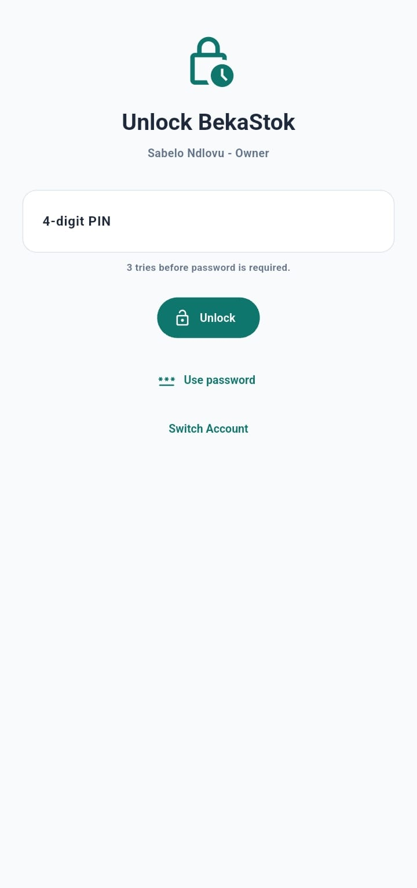
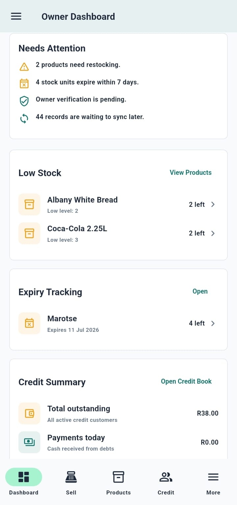
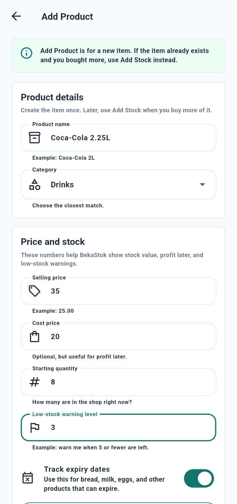
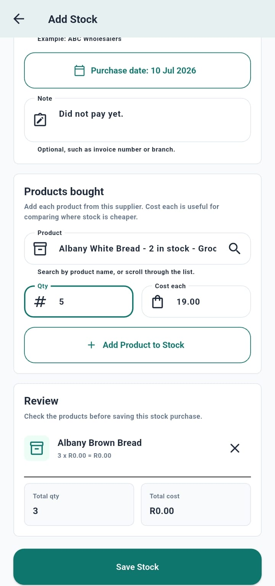
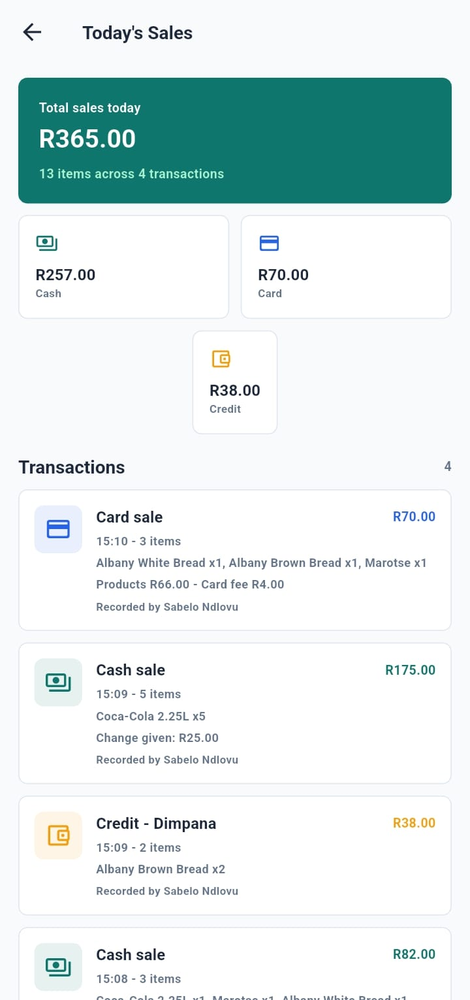
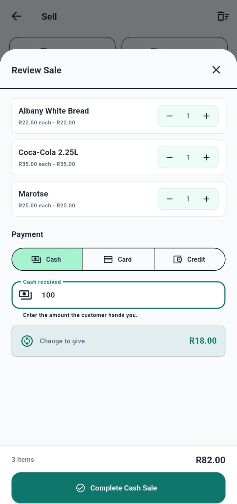
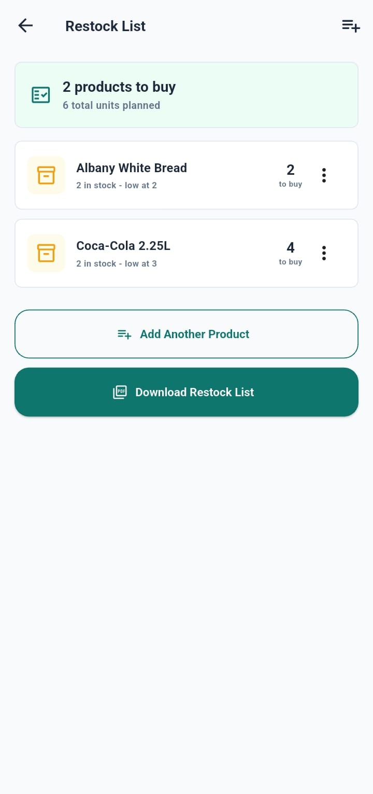
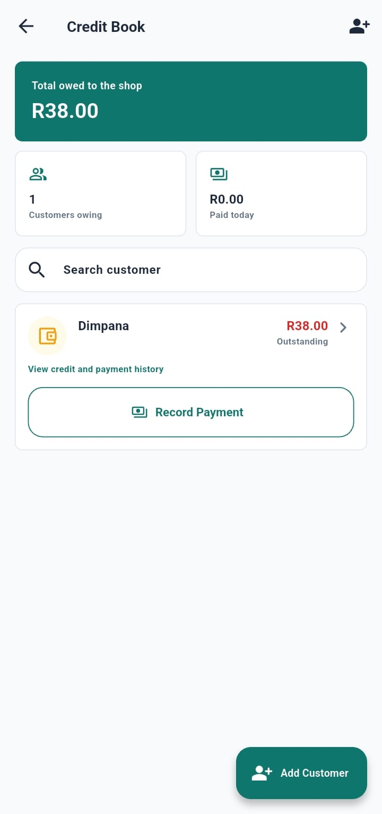
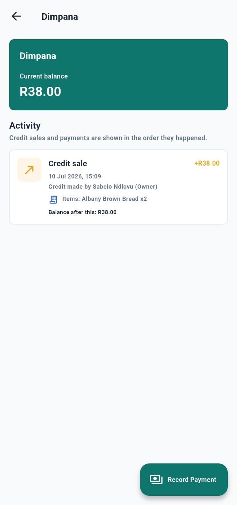
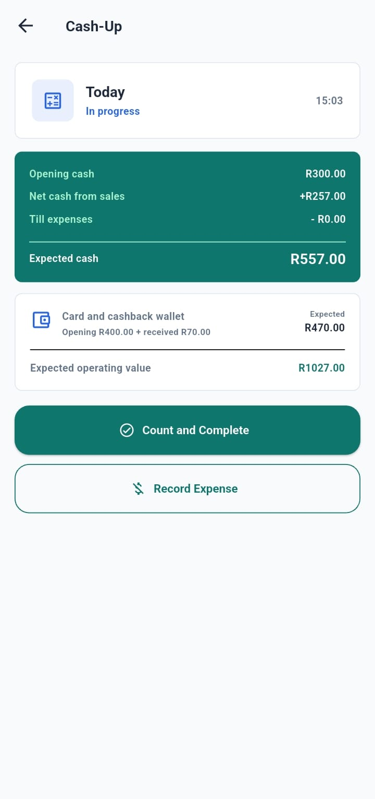
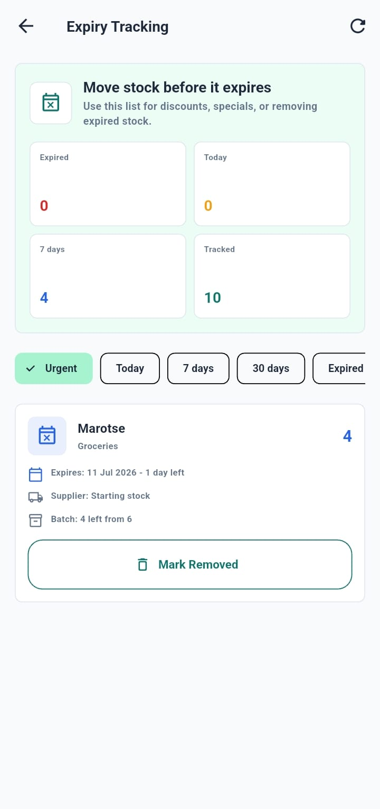
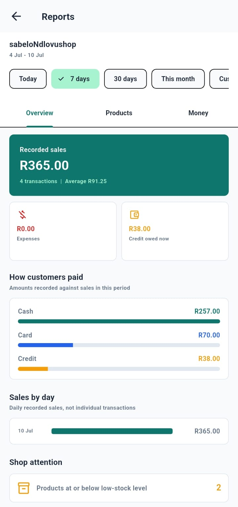
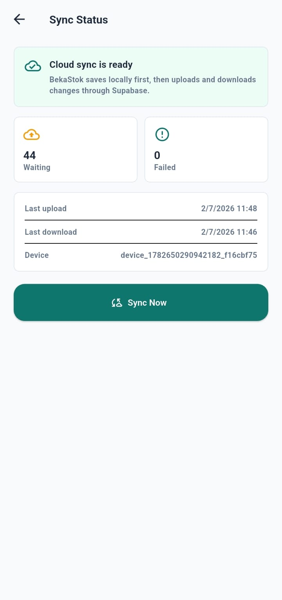
Sole Developer & Project Owner
As the project owner and sole developer, I planned, designed, and built BekaStok from the business problem to the working pilot version. My work included feature planning, user workflows, Flutter development, offline database design, Supabase setup, and pilot testing preparation.
Pilot testing with a local shop.
The pilot focuses on ease of use, offline reliability, data entry flow, stock visibility, and whether the system fits the shop's normal way of working before wider release.
Next step